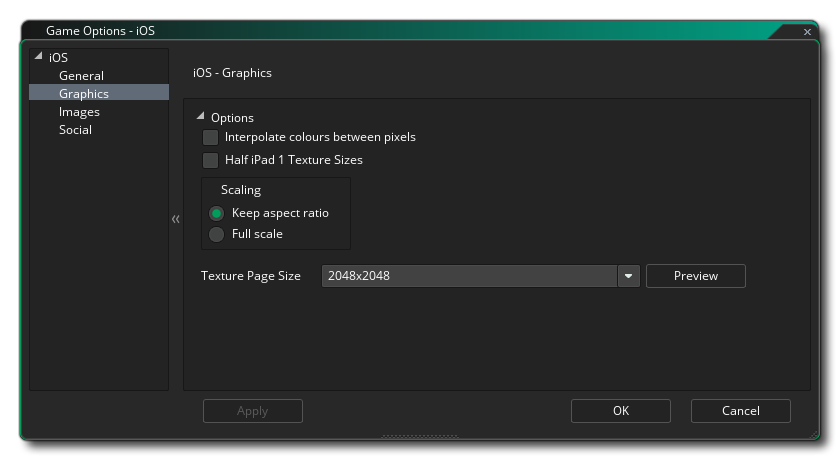
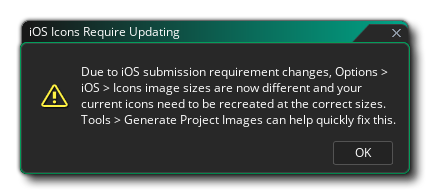
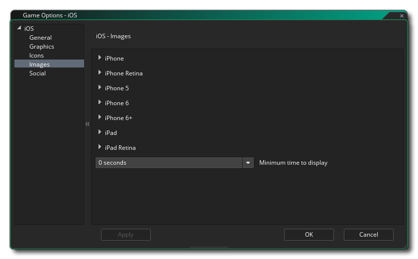

Esta sección describe las diferentes opciones disponibles para usted que controlan cómo se compilarán sus proyectos de juegos iOS. Las diferentes secciones son:
La primera parte de la sección General cubre Configuración de compilación para tu juego. Para empezar, establezca las Orientaciones en las que se puede ejecutar su juego para la mejor experiencia de usuario. Las opciones disponibles son:
- Retrato
- Retrato volteado
- Paisaje
- Paisaje volteado
Luego, puede ir a la sección de Soporte de dispositivos, con las siguientes opciones disponibles para configurar qué tipo de dispositivo apuntar:
- iPhone o iPod Touch: iPhone 4 y superior o dispositivos iPod Touch
- iPad: dispositivos iPad
- Ambos: tanto iPhone / iPod como iPad
Lo segundo que debe hacer es completar la información del producto sobre su juego, incluido su nombre para mostrar, su ID de paquete y la información de la versión. Tenga en cuenta que la ID del paquete debe estar en el formato correcto de URL inversa para que la versión final del juego funcione correctamente, por ejemplo: com.[Company].[GameName]. Aquí también debe proporcionar el Identificador de equipo que desea utilizar para firmar la aplicación final que GameMaker Studio 2 crea para usted. Si lo configura aquí, superará la ID del equipo que ha proporcionado en las Preferencias de iOS.

Aquí puede cambiar los siguientes detalles relacionados con la forma en que se mostrará su juego, con las siguientes opciones disponibles:
- Interpolar colores entre píxeles: activa la interpolación, que básicamente "suaviza" los píxeles. para gráficos de píxeles nítidos, debería estar apagado, pero si tiene buenas combinaciones alfa y gráficos de bordes suavizados, es mejor dejarlo encendido. El valor predeterminado es desactivado.
- Texturas de la mitad del iPad 1: el iPad 1 tiene mucha menos memoria de textura que los dispositivos más recientes, por lo que puede habilitar esta opción para reducir el tamaño de las texturas a la mitad si desea apuntar a este dispositivo u obtener la máxima compatibilidad.
- Escala: aquí puede seleccionar escalar el lienzo de dibujo manteniendo la relación de aspecto dentro de la pantalla del dispositivo, agregando "relleno" alrededor de los bordes para que se ajuste a la pantalla, o puede seleccionar que el lienzo de estiramiento se estire para que se ajuste.
Finalmente, existe la opción de establecer el tamaño de la página de textura. El tamaño predeterminado (y el más compatible) es 2048x2048, pero puede elegir desde 256x256 hasta 4096x4096. También hay un botón marcado Vista previa que generará las páginas de textura para esta plataforma y luego abrirá una ventana para que pueda ver cómo se ven. Esto puede ser muy útil si desea ver cómo están estructuradas las páginas de textura y evitar tener páginas de textura más grandes (o más pequeñas) de lo necesario.
NOTA: ten en cuenta que cuanto mayor sea el tamaño de la página de texturas, menos compatible será tu juego.
Esta sección le permite agregar los diferentes iconos requeridos por los distintos dispositivos y las diferentes partes de la App Store de iOS. Estos iconos deben ser creados como 24bit .png Imágenes al tamaño especificado para cada una.
Vale la pena señalar que GameMaker Studio 2 tiene una herramienta Project Image Generator que se puede usar para crear automáticamente todos los iconos necesarios para todas las diferentes plataformas de destino en las que se está compilando el juego. Si utiliza esta herramienta, debe revisar las imágenes creadas para asegurarse de que sean lo que necesita.
NOTA: Al importar un proyecto anterior, se le puede presentar la siguiente advertencia:  Esto se debe a que la versión de destino actual de iOS ha cambiado el formato de los íconos requeridos desde que el proyecto se cargó previamente. Se le pedirá que vuelva a crear todos los íconos, ya que se los reemplazará con los íconos genéricos de GameMaker Studio 2 (puede usar la herramienta Generador de imagen de proyecto mencionada anteriormente para hacer esto rápidamente).

Esta sección le permite agregar gráficos separados como pantallas de presentación (la imagen que se mostrará brevemente mientras se carga su aplicación) para cada uno de los diferentes dispositivos de destino de iOS. Estas imágenes deben crearse como imágenes individuales de 24 bits *.png sin transparencias y con el tamaño correcto para cada uno de los dispositivos y orientaciones requeridas. También puede establecer un tiempo mínimo para mostrar las pantallas de inicio en el menú desplegable en la parte inferior (de 0 a 10 segundos).
Vale la pena señalar que GameMaker Studio 2 tiene una herramienta Project Image Generator que se puede utilizar para crear automáticamente todas las imágenes necesarias para todas las diferentes plataformas de destino en las que se está compilando el juego. Si utiliza esta herramienta, debe revisar las imágenes creadas para asegurarse de que sean lo que necesita.
Esta sección es para habilitar diferentes funciones sociales en tu juego de Android. Se pueden elegir las siguientes opciones:
- Facebook: si necesita las funciones de Facebook, debe seleccionar esta casilla de verificación y luego proporcionar el ID de la aplicación de Facebook y el Nombre de la aplicación de Facebook. Tenga en cuenta que se accede a todas las funciones de Facebook a través de una extensión, y cuando marca la casilla Usar Facebook, se le solicitará que descargue e instale la extensión de Facebook desde Marketplace.
- Habilitar notificaciones automáticas: para que su juego use notificaciones automáticas, primero deben estar habilitadas aquí, de lo contrario no funcionarán. Las notificaciones locales en Android no requieren el "ID de remitente de GCM", pero debe agregarlas si desea crear notificaciones remotas.